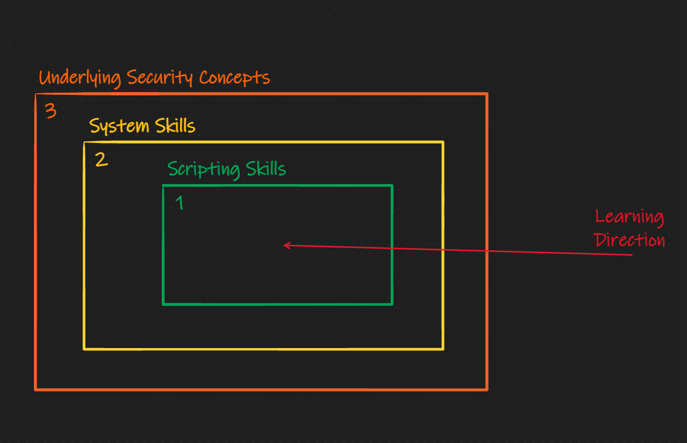
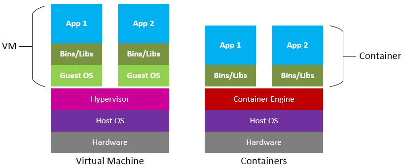
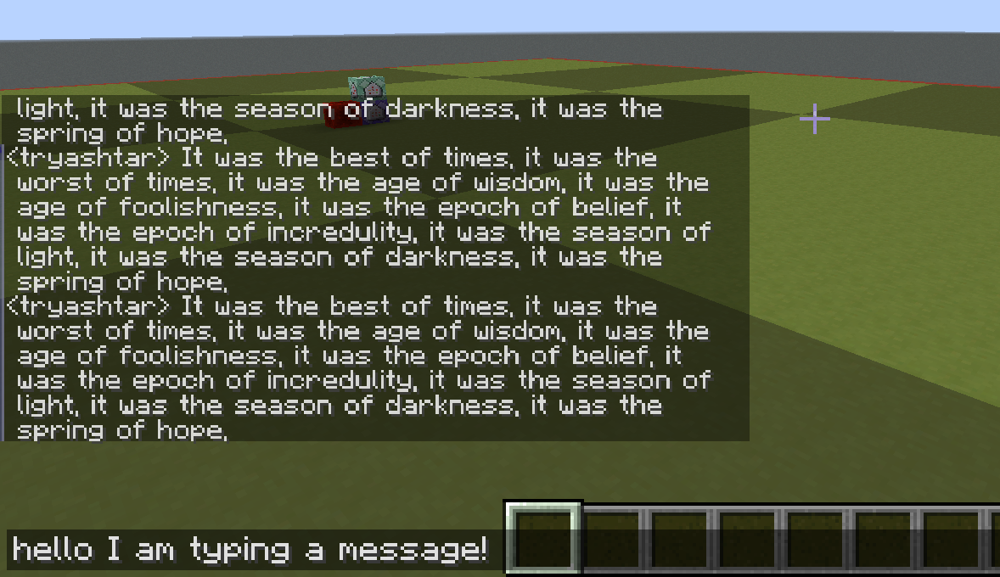

`Ike: The Systems Hacking Handbook
Introduction
Welcome to 'Ike (pronounced Eeh-Kay). This handbook is intended to take those with 0 system hacking experience (that's right 0), and get them to an entry-level point within the pwn.college ecosystem. By following these steps, you can establish a strong base upon which to build your future hacking knowledge on. This process will essentially provide you with your white belt in hacking (at a system level), which will only be enhanced within the subsequent pwn.college program. While this handbook leans into the CTF atmosphere commonly seen on sites like CTFTime, the content should prove insightful to those curious individuals with no CTF experience (if you are looking for web skills, look somewhere else :D). If you
get some usage out of this handbook, I ask you to hmu with a star on the github repo, so I know people actually use this, lol.
Through this Introduction section, you will find meta-data about the handbook, why it was written,
and what I hope to accomplish with it as well as the target audience.
About
As president of the ASU Hacking Club, I have seen a common trend with regards to incoming club recruits. They tend to be driven Freshman or Sophomores who have yet to take the necessary classwork or gain the necessary experience to easily transition into the pwn.college infrastructure. While I currently occupy a leadership position in ASU-HC and Shellphish, I was once in the same position as many of our struggling recruits. Ideally, this perspective should allow me to offer the necessary resources when getting started in ones “hacking” career. I would hope that the following material also helps those occupying an even earlier academic background. If you find any spelling errors or suggestions, feel free to PR me on github, or just contact me directly on discord: mahaloz#1337.
Contributors
- Zion Leonahenahe Basque: main author
- Scott Weston: editor
Background
The Education Gap
Over the course of my ever-evolving CTF career, I've seen various methods for getting started in hacking. There are the classic "getting started" guides (ex. this blog), and then there are the more novel interactive frameworks (ex. pwn.college). Many of my peers tend to lean more towards interactive experiences via CTFs, but there have also been sizable portions on the team that has not. In either case, I think there is a small but impactful knowledge gap when following an official "curriculum" instead of creating one yourself.
To help those cross the aforementioned gap, pwn.college was created. By investing time in pwn.college, one would ideally obtain their "yellow belt" in hacking, with the end result being a set of skills that will help you shape your own future learning curriculum. At this time, the Arizona State University class that uses the pwn.college framework (taught by Yan) for its curriculum is offered to those with an equivalent CS experience level of a "junior." In other words, the class expects you to know how to use Linux, understand C, binary properties ... and much more. If you are already lost, don't despair. I was in the same place as you when I started hacking. By reading this handbook and investing your time in growing your skillset, you should gain the necessary skills to take this "daunting" junior class.
The Target Audience
This handbook is targeted at anyone on or below the "junior in college" level of computer science, though even those individuals may find something useful from this handbook. This handbook is intended to give you all the material and direction you need to start pwn.college. After which, it is assumed you will continue your education with the pwn.college teaching platform. Learning from this handbook will have varying difficulty based on the reader. The people who will have the most efficient/easiest time learning from this handbook look like this:
- Comp. Sci. College Juniors
- Comp. Sci. College Freshmen/Sophomores
- High School Students
This of course assumes that you are in a college program that touches on systems (which it should). Things like C, debugging, memory management, operating systems. These things will make this experience much easier, but this handbook was made to help people who have not yet had the chance to take those types of classes (or don't have access to it). There the individuals who will learn/benefit the most from this is:
- High School Students
- Comp. Sci. College Freshmen/Sophomores
- Comp. Sci. College Juniors
In the end, many people can benefit from this, so feel free to go to exact sections if you think you have nothing to gain from the others; however, I do encourage everyone to at least skim each section since you may find some surprising tutorial/article I reference.
The Handbook's Novelty
As I briefly mentioned above, there exist many places to start practicing pwning and reversing, but not many that will explain the introductory concepts. As an example, taking a look at the Nightmare Book's style of teaching. It is layed out into chapters of exploitation techniques, which I like a lot. Each section is a writeup of how to solve a challenge that has the exploitation technique embedded in it. I think this method is extremely effective for learning for those with pre-established skills in Linux, C, and systems. I think this method fails for noobs who are just learning how C really works (on the memory level). In my brain, prepare for what animations look like in my brain, the learning barriers look like this:
Nightmare Method:

'Ike Method:

The subtle difference here is that I believe the underlying security concept should be educated and learned about through explicit material first, then it should be reinforced with scripting and systems skills. This is not to say I don't like the Nightmare method, I love it, but others need a different one. This book is that different method.
Inspiration
While writing this, and coming up with the idea, I took a lot of inspiration from blogs and posts as well as entire pages dedicated to the education of CTF knowledge. A few stick out in my mind:
- Nightmare Book: theme, idea, use of mdbooks
- CTF Wiki: layout, reversing & pwning content
- pwn.college: content
- pico.ctf: educating noobs in CTF
There are many others that I did not list here, but I will try to link them in as we get through some of the content that cites them.
Overview & Schedule
Overview
We will cover as few concepts as possible to make you dangerous enough to start down a systems hacking journey. I will usually use external tutorials embedded in this one to get ideas, skills, or setups done quickly. This handbook acts as duct tape for all those tutorials.
As seen in the table of contents on the left, we go through 5 major topics:
- Operating Systems
- ASU Equiv: CSE330,365. Overviews what makes something an operating system, how we can virtualize them, and how we use them in hacking. Includes a set up for containers and VMs.
- Programming Languages
- ASU Equiv: CSE340,240. Overviews what makes something a programming language, then covers a interpreted and compiled language that are commonly used for hacking. This includes how to use them efficiently.
- Computer Organization
- ASU Equiv: CSE230. Overviews the internals of computing and how we organize them, including memory layout, assembly (x86), and the types of executable file types you will find in the wild.
- Processes & Debugging
- ASU Equiv: CSE330,240. Overviews how processes work in Linux and generally. Includes learning how to trace, debug, and understand running process. Also has a small intro to using Python to mess with running processes.
- Security Concepts
- ASU Equiv: CSE365. Does a small dive into some common security concepts that will help new hackers think about problems in different ways. Highly inspired by Adam Doupe's CSE365.
How use this handbook
To efficiently use this handbook you should be prepared to follow various links across the web that I've curated with time. Most links I use are often for things that are more copy-paste-and-follow like. As an example, in the next section, I'll have you install a Virtual Machine. In that section I use an external link to have you install it so I don't duplicate work that is already one well. Other things like using more complex stuff will usually be covered in the handbook.
Another thing to note is the use of the Dinkus within this text:
* * *
Whenever you see this symbol it means there is link you will need to follow between the text above and below it. That link will take more than 15 minutes to complete. As an example, in the next section's introduction I place a link to "What is Linux." I estimate that you will take around 15 minutes or more of time to read that link before progressing onto the next section. Take your time with the reading, its the absolute minimum you need to read to get that chapters topic.
Lastly, at the end each section, excluding this one, you can find a practice challenge-set that will test your knowledge on that chapter. It is highly recommended that you complete all the challenges the chapter asks for before you move on to the next chapter. Most of our challenges currently can be found on dojo.pwn.college
Work in Progress
The following sections are still being worked on:
WIP:
- Programming Languages (50% complete)
- Processes & Debugging (25% complete)
- Security Concepts (0% complete)
Operating Systems
A speed introduction to operating systems and the fundamentals needed to be a hacker when working with Linux. If you are already familar with Linux, skip to the last sub-section of this chapter: hacker practice and do the shell practice section.
Introduction
Background
To start your journey into binary reversing and exploitation, you first need to understand the platform on which you reverse and exploit. As you are likely aware, you are currently on an operating system (OS): likely Windows or MacOS. Generally, people know the difference between these OS, but to be a good hacker you must understand these differences on a technical level. In future modules, we will talk about MacOS and Windows, but for now Linux will suffice.
What is Linux you may ask? Linux is the operating system of hackers! It is also the OS that most embedded devices and servers use. Linux is open-source, which means it is also an OS that is easy to develop on and learn (relative to the other ones). Right now it might not be clear what you would be developing that is related to the OS or how it is useful, but it will hopefully be more clear at the end of this section.
Linux
To get a better idea of what Linux is, read the first five sections of this article.
* * *
Now that you know what a distribution of Linux is, you can be informed that we will be using the mainstream, Debian based distribution Ubuntu. If you have found your way here through external hacking tutorials, you be tempted to use Kali Linux, a similarly Debian based distribution. I'll make the argument that it will be easier to use Ubuntu than Kali, and for the basis of these tutorials, the up-to-date kernel of Ubuntu is better.
TL;DR: We will use Ubuntu, almost none of the tools on Kali are needed for this.
In the next sub-section, we get Ubuntu installed.
The Kernel
Before going straight into using an operating system, it's nice to mention that there is a component of your computer that makes everything run―it's called the kernel. In a typical introduction to operating systems you would likely be introduced to this idea in-depth, but I will only briefly talk about it. If you are very interested, you should read this book after completing this handbook, as the content assumes you are already a systems hacker.
The kernel is the lowest running software that is always running when the computer is on. It's a fundamental part of the operating system that runs on your computer. If you imagined the computer as a stack of software and hardware, the kernel would be the line that divides the two:
The kernel is responsible for:
- making sure programs have somewhere to run (talked about later)
- hardware peripherals, like you physical mouse, actually do things
- your computer having enough memory to function
And various other tasks that set your computer apart from your toaster oven. It is often true that each operating system will have its own kernel that was designed to work with it.
Since this "program" called the kernel is always running and controls everything important, it's safe to assume that this program is at a higher level of existence than a normal program. Not only is it at a higher level of privilege than a normal program, but it is also at a higher level of privilege than an admin. The kernel is the god of this computing world, none come before it.
Luckily, this god known as the kernel is benevolent and allows measly normal programs to use parts of it when needed. Let's take my favorite game minecraft as an example.
Minecraft as an example
When you use a normal program, like Minecraft, you are running the program in user space. The user space is the virtual space of your computer where normal programs run. As expected, there exists a space for kernel things called the kernel space.
So you launch Minecraft, and load into your favorite world. You are in the user space. But now,
you move your mouse so that your view in Minecraft rotates -- you have now briefly entered
kernel space. Why? Because hardware caused something called an interrupt, which in the
god analogy is equivalent to praying to god for god for a brief blessing of power.
When you move your mouse this is what happens:
- The software that drives the mouse detects a movement
- The software causes an interrupt, which stops whatever else is running for a brief time
- It enters kernel mode by setting a value that signifies that it is "privileged"
- The kernel interprets the exact movement then sends the info back to user space
- The mouse move is handled in Minecraft.
You can visualize it like this (prepare for 3rd grade drawings):

TL;DR
The gist here is that there is a super privileged software running on every computer called the kernel. The kernel controls everything at the lowest level, and compromising it means you compromised everything above it―any software running on the computer. In our next section on virtualization, it's helpful to know this thing called the kernel exists.
Virtualization
Virtualization is the cornerstone of modern operating systems. To virtualize something is to create a virtual version of it that does not require hardware. As an example, it's like running an Android phone on your laptop. The android operating system is supposed to only be run on phone hardware (for the most part), but yet we can run it on a laptop with an emulator.
Virtual Machines
What is a Virtual Machine?
A virtual machine (VM) is a virtualized operating system. Read this article before continuing. If you are very lazy, you can just watch this video
* * *
We use VMs, as said in the article, because it is isolated from the host system and it allows us to keep our nice comfortable OS on our computer. This means you will have both your host OS (Windows/MacOS), and this VM of Linux for hacking.
Setting up a VM
If you are an ASU student, use VMWare. The school has given access to it for free. Get it here. If you are not, Virtualbox works as well.
* * *
Now that you have download the software to use a VM, let's actually make an Ubuntu VM. Follow the tutorial below for the software you are using:
After following the tutorials above, you should have an Ubuntu machine ready to go with a login.
Containers
Containers are another level of virtualization that allows for isolated spaces in the kernel to be created and destroyed without affecting each other.
What is a container?
To get more specific, read what Docker has to say on what a Container is: here. Now you may be wondering, how does this differ from a VM? As an end-user, there is no difference. But as far as technicals go, Microsoft's diagram is a good comparison:
VMs vs Containers 
In simple terms, a VM is much more heavy since we need to initialize an entirely new kernel for each VM we make. In a container, we share the already existent kernel and, using some technical tricks, create isolated sections of the kernel that we then use to create containers (which act as VMs).
TL;DR: container light, VM heavy.
Why use a container?
You may be asking yourself, "why use a container?" We already are in a VM, so as far as affecting our host machine goes, we are
already in the clear. Containers become the most useful when trying to run applications that have dependencies that
we might not have access to in our current version of the VM. For instance, wanting to run an Ubuntu 18.04 application
while in Ubuntu 20.04. You can either pray to the computer gods and hope your dependences still work in the new version,
or you can use a docker container that creates an Ubuntu 18.04 environment in it to run. The latter is easier. In addition,
containers are not persistent, meaning that when you are done running the container, everything you created inside of it is
destroyed.
Docker: the modern container
Now that you know what a container is, it's time we set you up to be able to use containers. There are many implementations of containers, but the one we will use is Docker. Docker is very mainstream and has a lot of use across the computer science industry. Take for instance Wordpress, which you have likely heard of or used. It's a platform for building websites for free with a GUI. It also has a lot of dependencies and things you need to set up before using it. Wordpress uses Docker, and has made a docker container that does it all for you. Check it out: here. Essentially you can run an entire wordpress hosting software with a database all with this simple command in a terminal:
docker run wordpress
Which is a great segway into installing Docker, since it requires use of the command line.
Setting up docker
We will now install Docker on your Ubuntu VM, so from now on all instructions are pertaining to being inside
you VM. First login to the VM, then open up the terminal. You can do this by either searching applications or
simple right-clicking the desktop and clicking "Open terminal". This is where the fun begins. Pro-tip,
you can click the copy button in the top left of the code snippets to copy and paste to your terminal.
It's alright if you don't understand all the commands in this section, we will cover using the terminal later.
First, we need to update the list of installable applications. Run:
sudo apt-get update
After that, we need to install the dependencies of docker:
sudo apt-get install \
apt-transport-https \
ca-certificates \
curl \
gnupg-agent \
software-properties-common
Next, let's add dockers GPG key so we can get their software:
curl -fsSL https://download.docker.com/linux/ubuntu/gpg | sudo apt-key add -
Add the repository:
sudo add-apt-repository \
"deb [arch=amd64] https://download.docker.com/linux/ubuntu \
$(lsb_release -cs) \
stable"
Finally, update once more and install:
sudo apt-get update
sudo apt-get install docker-ce docker-ce-cli containerd.io
Congratulations, you just installed your first command line tool! And quite a powerful one. Let's verify it works.
Using docker
Verification
To verify you actualy have docker running, simply run:
sudo docker run hello-world
The output should look something like:
Hello from Docker!
This message shows that your installation appears to be working correctly.
To generate this message, Docker took the following steps:
1. The Docker client contacted the Docker daemon.
2. The Docker daemon pulled the "hello-world" image from the Docker Hub.
(amd64)
3. The Docker daemon created a new container from that image which runs the
executable that produces the output you are currently reading.
4. The Docker daemon streamed that output to the Docker client, which sent it
to your terminal.
To try something more ambitious, you can run an Ubuntu container with:
$ docker run -it ubuntu bash
Share images, automate workflows, and more with a free Docker ID:
https://hub.docker.com/
For more examples and ideas, visit:
https://docs.docker.com/get-started/
Having some fun
To make things a little more interesting, let's launch an older Ubuntu version inside your current Ubuntu version. Virtualception. Let's first see what version we are on in our machine:
grep '^VERSION' /etc/os-release
I'm on Ubuntu 18.04, so my command output this:
VERSION="18.04.5 LTS (Bionic Beaver)"
VERSION_ID="18.04"
VERSION_CODENAME=bionic
You may be on 20.04 so it will look slightly different. Take a note of the version you are on.
Now let's start an Ubuntu 16.04 machine. Run:
docker run -it ubuntu:16.04
Since it's the first run it will take a few minutes for it to pull down the Ubuntu image data. Once it's done, you should see a waiting prompt that looks like:
root@cadd99990677:/#
You have now opened a terminal in a virtual Ubuntu. Congratz. Run the same command from earlier in this prompt:
grep '^VERSION' /etc/os-release
The output should be:
VERSION="16.04.7 LTS (Xenial Xerus)"
VERSION_ID="16.04"
VERSION_CODENAME=xenial
Pretty cool right? We are inside a virtual machine in a virtual machine (technically a container, but you get the point). Now type:
exit
and hit enter. You will be back to your normal terminal. Amazing!
We will use Docker often. If you are excited about this, you can check out this tutorial: here,
though it is not mandatory. Now it's time to learn how to use Bash, the terminal you typed on earlier.
Linux OS
Instead of explaining how the Linux Operating System works from the ground up, we will instead attempt to learn how to use it as quickly as possible. To do this, we will cover:
- Using the terminal
- Permissions and how they work
- SSHing
- Puzzle solving in the shell
The Terminal
You got a little taste of using the terminal in the last section, but now it's time we got literate. Expect this section to take a few hours since we will be out-sourcing work to a few different problems/tutorials across the web.
For the majority of getting you good with begging parts of Linux, we will be using the amazing class The Missing Semester by MIT. We will not be doing the entire class, only the parts that matter the most.
The Shell
You can think of the shell as the terminal you used earlier. The shell is your text interface into the computer. It allows you to do things quickly and powerfully. To become a good hacker, you must first learn how to navigate and use a shell.
To do this, we will now jump to the earlier mentioned MIT course on hacking tools. Read and do the exercises of this lesson: Topic 1: The Shell. If you do not like reading, you can also find the lecture at the top of that page. This will take some time, so come back here when you are done.
take the time to do the exercises before moving on, it will help
Shell Scripting
At this point, it should start becoming clearer that each shell has it's own scripting language that makes automation very easy. Hacking often involves repetitive tasks and doing things on a massive level from a shell. Let's learn how to use scripting (using the language) in a powerful way.
Like last time, Read and do the exercises of this lesson: Topic 2: Shell Tools This will take some time, so come back here when you are done.
Using VIM
Often, after scripting and finding your way to files in your filesystem you need to edit them. Currently, you should have no idea how to edit files in your terminal, but we are going to change that now. Hackers need to work fast, and that means writing code directly from the same interface you use to run it. The terminal is this place. To edit things fast, we use a quaint program called VIM -- it looks old and feels old, but it is very powerful.
Like earlier, Read and do the exercises of this lesson: Topic 3: Editors This will take some time, so come back here when you are done.
After this, you will be quite a powerful user.
Permissions
The permission to do something is a major component of hacking. Often, we are trying to escelate our privligae in whatever scenario that is. This can mean becoming the admin of a computer you don't own, or simply being able to access restricted things in a video game. Following in this nature, files in the Linux operating system have permissions.
To learn how they work, read this. It should be easier and faster than the earlier sections, considering you may have already encountered permissions in your own system.
Hacker Practice
To practice, we are going to be using a hacking practice site called a Wargame site. These sites are similar to a CTF in that they offer challenging puzzles that require technical knowledge. They are different in the fact that they have no time limit to the competition. People from across the world can use the challenges on the site at any time.
The site we are using is called Over The Wire.
The wargame Over The Wire has a lot of different modules that you can practice on, but for the sake of speed in getting up to hacking whitebelt in a reasonable time, we will only be doing the bandit challenges. Before you start, let's talk about how you will play them. If you already know how to use SSH, skip to the practice.
SSH
SSH stands for Secure Shell. It's a protocol (messaging language) used to get a remote shell on another machine. A remote shell is what it sounds like: an interactive shell you can use on a machine you don't have physical access too. After using it a few times it becomes clearer what this means.
Recall the Ubuntu container we used in the containers section. We ran our docker command and it gave us a shell into a different Ubuntu version.
docker run -it ubuntu:16.04
It resulted in a shell. And to get out of the shell, and subsequently the container, we used:
exit
In the shell we had, which returned us to our machine. SSHing is very similar. Let's SSH into the first level of bandit, which is here.
ssh bandit0@bandit.labs.overthewire.org -p 2220
Input the password, bandit0, and now we are in a shell:
bandit0@bandit:~$
As you guessed it, this is likely a different version of Ubuntu then what you are running. Use our
earlier command from the containers section to check what that is. To confirm that this is
a machine we don't own, let's check what the ip address is. An ip address is an address that is
associated with a device on the internet. Ideally, this is a unique address that no other device
should share, but nowadays this is not always true. For now, assume it is unique.
Run:
curl https://ipinfo.io/ip
Take a note of the address, then exit the machine just like before:
exit
Now we are back on our host machine. Run the same curl command again to get the ip address of
your machine:
curl https://ipinfo.io/ip
Notice the numbers are fairly different? This confirms that the machine is at least not local
(on our current network). If you want to take it further, you can even look up the location
associated with the ip address of Over The Wire.
SSH Semantics
Lastly, let's talk about the semantics of the actual SSH command we ran:
ssh bandit0@bandit.labs.overthewire.org -p 2220
Like logging into any machine, it requires a username. The first part of the ssh command is
the username, which is bandit in this case. Next is the @ symbol to signify where the end
of the username is and where the remote address begins. The address here is
bandit.labs.overthewire.org. You may be confused here because it does not look like a normal
ip address, which is just numbers. This is due to DNS.
DNS is outside the scope of this section, but just know it allows you to have fancy names point
to normal looking ip addresses.
So far we have learned SSH looks like:
ssh <username>@<ip_address>
The last thing we have to talk about is the -p 2220 in the command. This is an option that specifies
a port to connect over. You can learn more
about all the options of ssh by running:
man ssh
Practice
Now that you have this last tool, SSH, in your arsenel, you are ready to start some hacking practice. To show you are truely ready to progress to the next section, you must prove you are competent with the shell.
On OverTheWire: Bandit do levels 0 through 15. These levels should take you a day or two to complete depending on how fast you get the later levels done. Good luck, and when you complete this head over to the next section!
Computer Organization
In the last chapter, you learned how to use other people's programs (ls, sh, find), virtualize things, and how the operating system
interacts with programs. In this chapter, we learn how to write our own programs, interface directly with the kernel, and understand how the computer manages high-level ideas for our low-level solutions.
Introduction
To cover computer organization is to cover what it means to be a computer. The way we organize the hardware dictates how our computer works. The organization of hardware in a particular form is called a computer architecture.
The Von Neumann Architecture
The von Neumann architecture is by far the most famous and well-known abstract computer architecture in computer science. Its principal belief is that our computer is a "pyramid" of memory units that get faster but smaller as we go up the stack. You put things you need faster in the higher level memories, and things you need slower and in larger quantities in the lower level memories:
Abstractly, this is done because faster memory units are more expensive to make, and usually, we don't need faster memory for long. So what the hell is a faster memory unit? Let's revise the picture above:
Two commonly known memory units are your hard drive and your RAM. As you likely know, the RAM is much smaller than your hard drive, but somehow much more expensive. In a parallel fashion, your RAM is also much faster than your hard drive. From now on, let's refer to your RAM as computer memory. You probably have 8 Gigabytes of memory. Why is it so small? What is your computer memory actually used for? Why does it exist aside from your hard drive? The Von Neumann architecture dictates that it exists to put things we need more frequently or faster in. The special thing about your computer memory, though, is that it is volatile—meaning anything put in it is deleted when your computer restarts.
Often the things we need in memory are programs, because we want those to run as fast as possible. Before we talk about putting programs in memory, we need to briefly talk about how we count in computers (yes, strange idea). Move on to the next reading.
Math & Counting
Bits
You've seen it before in movies, a series of ones and zeros. Now you have a name to go with it: Bits! Here is an example of some Bits:
0100010101001001011101001001001000000000011101101111010111010110
According to Wikipedia:
"The bit is a basic unit of information in computing and digital communications ... The bit represents a logical state with one of two possible values. These values are most commonly represented as either "1" or "0", but other representations such as true/false, yes/no, +/−, or on/off are common."
Let's take emphasis to the "represents a logical state with one of two possible values." So a bit b, can be either a 1 or a 0. That means a single bit has two combinations (1 or 0). Let's make this a little more abstract: a single bit can represent two distinct things.
As an example, let's say we own a light tower at a dock. If the light is on, aka 1, then a boat can dock now. If the light is off, aka 0, then the boat can't dock now. Simple, on or off. 1 = dock; 0 = no dock. But what if we need to tell the people in the boats more than just two things? Well, we can get more lights (aka more bits). If we have two bits, we now have 2 * 2 = 4 possible combinations, so we can represent 4 things in total now.
Assume the boaters know which light is on the left and which is on the right. Now we can signal four different states of docking:
00 = can't dock now
01 = can dock in 1 hour
10 = can dock in 2 hours
11 = can dock now
So if the left light is on, but the right is not, then you can dock in 2 hours. In this way, we just encoded 4 different states of being. Pretty cool right? How in only two series of 1's and 0's we got that much information out. So how does it scale?
Scaling Bits
If 1 bit can encode 2 data states. 2 bits can encode 4 data states. 3 bits can encode 2 * 2 * 2 = 8 data states. The pattern here is called the power of twos. To get the number of states your bits can represent is simple: raise 2 to the power of the number of states you have. Here is a fancy function for it:
states(b) = 2 ^ b
Where b is the number of bits you have. So if you have 8 bits, then you have 2 ^ 8 = 256 different states you can represent... Yeah, that scales very fast. If you just had 8 flash lights, you could represent 256 different things to your friend across the street. Pretty cool. You may have noticed already, but its an exponential ramp-up on the number of states you can represent, which is good for us computer scientist.
Bits & Bytes
Often, we need to use more than just a single bit. We call a set of 8 bits a byte. Using our earlier maths, a single byte can represent 256 different states. When we use bits to store human data, we usually need much more than 1 byte. This is where our SI table comes for bytes:
1 kilobyte (kb) = 1024 bytes = 8192 bits
1 megabyte (mb) = 1024 kb
1 gigabyte (gb) = 1024 mb
1 terabyte (tb) = 1024 gb
You probably have more or equal to 256 GB of disk storage right? That means your disk has 2147483648 bits ready to hold either a 1 or 0 in it's place. That also means that your hard disk can represent 2 ^ 2147483648 different states. That's insane. How they do that with hardware is out of the scope of this handbook, but know that they do it with a little electrical engineering magic.
Hexadecimal
We talk about bytes so much that it is often easier to refer to a binary number in a completely new counting system called hexadecimal because it is more concise. Hexadecimal is one type of number system. Decimal, the one we usually count in, is another. To understand these bases and how to look at hex, watch this khan academy video
...
As a recap, Hex is converted to decimal and binary like so:
0 = 0 (10) = 0000
1 = 1 (10) = 0001
2 = 2 (10) = 0010
3 = 3 (10) = 0011
4 = 4 (10) = 0100
5 = 5 (10) = 0101
6 = 6 (10) = 0110
7 = 7 (10) = 0111
8 = 8 (10) = 1000
9 = 9 (10) = 1001
A = 10 (10) = 1010
B = 11 (10) = 1001
C = 12 (10) = 1100
D = 13 (10) = 1101
E = 14 (10) = 1110
F = 15 (10) = 1111
To make it clear that we are writing in hex, and not decimal, we will always append a 0x to the beginning of the number. So when we say 0x0F, you know we mean 15 in decimal.
To tie this all together, we go back to how many bits are in a byte. There are 8 bits in a byte which we usually write like so 0000 0000. We write it like that because the hex representation is 0x00. Now we can refer to bigger bit numbers really easy. For instance, if we wanted to refer to 20 decimal we would just write 0x14, which is 0001 0100 in binary. If you were confused about that conversion, re-watch the video above.
Remember that hex bytes can also scale just like we did earlier with bits. We can represent huge numbers with hex that we would not normally talk about, like:
0x7ffff7dd409
Which represents the number 140737351860368 in decimal. Yup that value took 6 bytes to represent. Aka 6*8 bits.
Now that we understand the fundamentals of bits, lets move on to using them in logic.
Bits & Logic
Continuing our discussion on bits, let's talk more about how we can mess with the states system we described earlier. Before that, lets clarify some notation:
Logic
You've definitely heard the term often, but how deeply have you understood the fundamentals of it? You can find an elongated definition on Wikipedia for Mathematical Logic, but lets define it simply as conclusions and reasoning of truths.
Notation
x = ymeans y is assigned to x, or, x is now what y is.x == yis a statement about equivalence "x is the same as y".
The second thing is a question of whether x is the same as y or not. As an example, say x = 7; y = 3. If we now say:
x == y
The answer to the question would be False. We could also write it as:
(x == y) -> False
This could also be said as x == y implies False.
To make logic easy to write in concise ways, we define abstract things as variables. Something like:
- S: "Today it's sunny"
- R: "Toady it's rainy"
Now just having truths assigned to variables would make logic very useless, so they only become useful when we apply operations to them. These operations are called logic operations. There are 4 fundamental logic operators:
- AND
- OR
- NOT
- XOR
Let't talk about each one.
AND
AND works logically like how you use it in english. Its useful for understanding the truth of two things. As an example:
S: "Today it's sunny"
R: "Today it's rainy"
S = True
R = False
(S AND R) -> False
Let's decode the above. First, we defined S and R as shorthand notation for an abstract thing like the state of the day (being rainy or sunny). Next we described the truth of the states we defined. "Today it's sunny" is True; then we said "Today it's rainy" is False. Lastly, we evaluated the truth value of:
(S AND R)
or the statement:
Today it is sunny AND it is rainy, which is False.
It's False because we had earlier said that it was not rainy today. In this way, you can treat AND like a function that takes two arguments AND(x, y). The input is two truth variables (which could be true or false), and the output is True or False. Let's shorten the state True to T and False to F. With all your knowledge we can easily define all the possible outputs of AND, known as a truth table.
| X | Y | X AND Y |
|---|---|---|
| F | F | F |
| T | F | F |
| T | T | T |
| F | T | F |
As you can see, the output is only ever True if both X and Y are true. After all of this, it will be much easier to define the other operators.
OR
OR is very similar to AND. It takes two truth values and outputs True if just one of the two are True. Here is the truth table:
| X | Y | X OR Y |
|---|---|---|
| F | F | F |
| T | F | T |
| T | T | T |
| F | T | T |
NOT
NOT is special because it only takes a single truth value. All NOT does is reverse the truth of its argument. Here is the truth value:
| X | NOT X |
|---|---|
| F | T |
| T | F |
Its useful now though to say that you can compound logical operators:
| X | Y | X OR Y | NOT( X OR Y ) |
|---|---|---|---|
| F | F | F | T |
| T | F | T | F |
| T | T | T | F |
| F | T | T | F |
In addition to that, NOT also has a special reversing mechanic on AND and OR. For instance:
(NOT(X OR Y)) == (NOT(X) AND NOT(Y))
You can test that above by making your own truth table. Notice how you can distribute the NOT to each variable and the operator, which flipped it to AND. The same is true in the reverse.
XOR
XOR takes two truth values like the others, but is less used in normal english. Its short for Exclusive, which means the output is only true when the inputs differ:
| X | Y | X XOR Y |
|---|---|---|
| F | F | F |
| T | F | T |
| T | T | F |
| F | T | T |
Notice how it is only True when things going in are different from each other? Its an interesting mechanic and will be used more later.
Now that we have a high level understand of logic, we can now relate it
Bit Logic
Logic with bits work exactly the same as logic in general. True is 1; False is 0.
Notation
Here is our new notation that is generally for bit logic:
AND: &
OR: |
NOT: !
XOR: ^
All of them still work the same, but now if I want to say x AND y I would actually say x & y.
Multi-Bit Logic Operations
Operations on variables with bits work even on the byte level:
x = 11110101
y = 00101101
(x & y) == 00100101
How did the above work? If you look closely, each logic operation was applied on each individual bit it lined up with.
Now, recall that bits can also be represented as hex! This means we can do logic operations on things that look like numbers (but remember they are bits under the hood):
x = 0x13 (00010011)
y = 0x32 (00110010)
(x & y) == 0x33 (00110011)
This entire time we have been using bytes, but to keep with the earlier theme, why don't we assume that we can represent things in 64bits. For conciseness, we don't write leading 0's in a hex number:
x = 0xcafe (64 bits)
y = 0xbabe (64 bits)
(x ^ y) == 0x0000000000007040
The zeros are shown in the result just to clarify once again that we are in 64bits, but all the operations we have done before still work. Remember you can always compound logic statements on other logic statements (and store them in another variable if you).
Logic Gates
All these bit operations are actually mechanics of real-world hardware that things run on. Since electricity is like a 1 or a 0, it makes sense that these logic gates are what we first implemented in hardware.
Circuit Engineers annotate these gates like shown here. Generally speaking, all things on computers first start with these fundamental logic gates that are implemented in hardware.
Now that we understand how to truly utilize the power of bits and logic, we can move on to understand a computer at its lowest level.
Memory
Returning back from our discussion on counting, let's talk about RAM, which we now refer to as computer memory. We will first talk about how the Von Neumann architecture affects how we run programs; then, we will talk about how bits dictate just how large programs can be.
Programs in Memory
Things Exist in Memory
Recall our earlier discussion on the Von Neumann architecture. We want things that we need faster to be used in the RAM since it is faster than the disk.
The things we usually need faster than anything else are our running programs. In addition, we don't need the space taken up by the running program to exist for a long time. Once we close our program, we want the running code that runs that program to be destroyed. To clarify, we don't want the data that the program creates destroyed, but the actual code that runs the program for that instance of it running. That's a lot of circular logic. Let's explain it out for our favorite game Minecraft.
Minecraft as something living in Memory
Let's say you wanted to start up Minecraft, open your favorite world you have been working on for three months, and place a single block from your inventory, then save and quit. Here's what happens:
- You double click the Minecraft icon
- Immediately, the OS places a copy of Minecraft's Code into RAM
- The OS (CPU) starts executing the location of memory Minecraft specified to start with
Now Minecraft is running and you can interact with it. When you click buttons in the Minecraft game, it simply transitions to different locations in memory where those button's code exists. Now you open your world:
- You click "open world" and you select your awesome world.
- Immediately, Minecraft finds the world on your hard drive where it has been saved for months
- Minecraft copies all the files that make it a world and places it in RAM
Now you are playing Minecraft in your favorite world! When you place a block down, that block is placed in the "copied" world that is currently in RAM. That's right, all of the changes you make before saving are in RAM; that's why games always tell you "don't turn off while saving..." because your RAM contents are essentially deleted when your system turns off.
So you place the block and save & quit. Then close Minecraft.
- Your computer copies the content of the world in RAM and re-saves it over the world on your hard drive
- Minecraft deletes the world copied into RAM
- Minecraft sends a signal to the OS that it is done running
- The OS gets that signal and destroyed the Minecraft copied into RAM.
Here is a diagram to summarize everything that happened:
Notice how this whole time we were playing on code that was copied into RAM. The entire time, the real Minecraft was sitting comfortably on your hard drive while a copy of it was doing all the world. As with everything you make changes to on your computer, copies are first placed into memory and then saved back to the hard drive after editing.
As you can see, we care about the response time of Minecraft so we copy it into memory. As with all things we need fast, they go in memory.
Observing things taking Memory
Open up the fancy terminal again and install htop.
sudo apt-get install htop
htop is an upgraded version of top. It allows you to see what is running on your computer and how much "things" it is using. One of those things is memory. Run htop by typing the command htop in the terminal. You should see a big thing pop open, with what looks like a sound bar thing on the top of the screen. One of them is labeled Mem for Memory. It is of course your RAM usage. Right now, with nothing but a terminal open, you should be seeing no more than 1 Gig of memory being used.
For me it looks like this:
Now go to your Ubuntu desktop and open Firefox. You should notice maybe half a gig of memory now being taken up. If you open more tabs and websites, then more RAM will be taken. This is memory in use!
Summary
Things exist in memory. When you run a program, it is put in memory. When you edit a file it is put in memory. When you run your Virtual Machine, it is put in memory.
Addressing
In the last section about programs in memory we talked about loading Minecraft into memory (RAM). It was briefly mentioned that:
When you click buttons in the Minecraft game, it simply transitions to different locations in memory where those button's code exists.
The way it transitions to different locations in memory is through addressing. Like real life, addressing helps us find the places things live, in-memory for this case. In real life, someone would give you a unique string, their address, where you could find them in real life. Something like 411 North Central Ave, Phoenix, AZ. In memory, we follow these same rules, but to a more simplified manner.
Linear Addresses
The simplified manner is that memory has a very specific set of rules:
- Each address is unique
- Each address is a number
The number starts at zero and continues to whatever the bit count of the computer is. This fact should now help you realize what it means to have a 64bit computer vs a 32bit computer. In the old days, everything was 32bit, but now everything is 64bit. If you find some old applications, you may notice the option to download either—since programs made in 32bit are cross-compatible for 64bit.
Anyway, we will assume you are on a 64bit computer. That means the starting address, or the smallest address, is 0x0000000000000000 and the largest address is 0xFFFFFFFFFFFFFFFF. You will notice this is an 8 byte range (also 64bit). Here is how you can visualize the memory in your computer:
*----*----*----*----* 0x0000000000000000
| |
|-------------------|
| |
|-------------------|
| |
|-------------------|
| |
| . |
| . |
| . |
| |
|-------------------|
| |
*----*----*----*----* 0xFFFFFFFFFFFFFFFF
At each address is an 8 byte slot for data. This means we could store 8 bytes nearly 2**(64) times. That is wayyyyyyyyy more RAM than you have in your computer, but it is nice to know that our current architecture could support even a huge amount of RAM.
Reading & Writing Data
To simplify things, lets define two functions:
read(address) -> outputs 8 bytes of data
write(address, content) -> writes 8 bytes of data to address
execute(data) -> executes the 8 bytes it's given
You can consider that when Minecraft launches the OS know where the beginning and end of Minecraft is. It records it with labels:
minecraft_start = 0x0000000040000000
minecraft_end = 0x0000000050000000
Minecraft will of course take up a large portion of space:
*----*----*----*----* 0x0000000000000000
| |
| |
| |
|-------------------| 0x0000000040000000
| |
| |
| MINECRAFT |
| |
| |
|-------------------| 0x0000000050000000
| |
*----*----*----*----* 0xFFFFFFFFFFFFFFFF
Notice that Minecraft neither starts at the beginning nor at the end of memory. Any program can be loaded at any random place in memory. In addition, other magical things happen to actually allow you to break up a program into multiple places, called Virtual Addressing. For now, consider things to be linear and continuous.
The OS does not know the exact location of the Minecraft Quit Button code. Instead, it only knows an offset from minecraft_start. Something like:
mc_quit_btn_offset = 0x80
Note: assume there are the correct amount of 0's on the other side of values when they are small like 0x80. This is all still 64bits
Now to run the Minecraft Quit Button, the OS simply reads the offset, then executes it.
code = read(minecraft_start + mc_quit_btn_offset)
execute(code)
*----*----*----*----* 0x0000000000000000
| |
| |
| |
|-------------------| 0x0000000040000000
| | <--------- mc_quit_btn_offset
| |
| MINECRAFT |
| |
| |
|-------------------| 0x0000000050000000
| |
*----*----*----*----* 0xFFFFFFFFFFFFFFFF
Other things happen, but for now understand that each thing is accessed as an offset. The same goes for writing over the contents of the map:
write(minecraft_start + mc_map_offset)
Summary
Things are laid-out in memory in a linear format. Each location in memory can be addressed by an address (usually referred to in hex). At each address you can store data and read data. All-in-all, we have a large place that we can read and write too using numbers as our address. We usually refer to locations as offsets of known labels.
Memory Segments
Introduction
In the last section, you learned that programs exist in memory. What you may not realize though is that we have segments, or divisions, of memory we a program is running. We call the addressing of these different memory segments a memory map. Let's print the memory map of a process. Run the command below:
sleep 5 & cat "/proc/$!/maps"
This will run the sleep command (which sleeps for 5 seconds), and while it is running use the pmap command to print out the memory map of the process (which is the running memory instance of sleep). If you end up not being able to run this line, install pmap with sudo apt-get install pmap -y. Here is what the result should look similar to on your system:
[1] 243862
55ce021ae000-55ce021b0000 r--p 00000000 08:05 3540380 /usr/bin/sleep
55ce021b0000-55ce021b4000 r-xp 00002000 08:05 3540380 /usr/bin/sleep
55ce021b4000-55ce021b6000 r--p 00006000 08:05 3540380 /usr/bin/sleep
55ce021b7000-55ce021b8000 r--p 00008000 08:05 3540380 /usr/bin/sleep
55ce021b8000-55ce021b9000 rw-p 00009000 08:05 3540380 /usr/bin/sleep
55ce03d2d000-55ce03d4e000 rw-p 00000000 00:00 0 [heap]
7f4055792000-7f4055d02000 r--p 00000000 08:05 3545607 /usr/lib/locale/locale-archive
7f4055d02000-7f4055d27000 r--p 00000000 08:05 3546309 /usr/lib/x86_64-linux-gnu/libc-2.31.so
7f4055d27000-7f4055e9f000 r-xp 00025000 08:05 3546309 /usr/lib/x86_64-linux-gnu/libc-2.31.so
7f4055e9f000-7f4055ee9000 r--p 0019d000 08:05 3546309 /usr/lib/x86_64-linux-gnu/libc-2.31.so
7f4055ee9000-7f4055eea000 ---p 001e7000 08:05 3546309 /usr/lib/x86_64-linux-gnu/libc-2.31.so
7f4055eea000-7f4055eed000 r--p 001e7000 08:05 3546309 /usr/lib/x86_64-linux-gnu/libc-2.31.so
7f4055eed000-7f4055ef0000 rw-p 001ea000 08:05 3546309 /usr/lib/x86_64-linux-gnu/libc-2.31.so
7f4055ef0000-7f4055ef6000 rw-p 00000000 00:00 0
7f4055f0a000-7f4055f0b000 r--p 00000000 08:05 3546044 /usr/lib/x86_64-linux-gnu/ld-2.31.so
7f4055f0b000-7f4055f2e000 r-xp 00001000 08:05 3546044 /usr/lib/x86_64-linux-gnu/ld-2.31.so
7f4055f2e000-7f4055f36000 r--p 00024000 08:05 3546044 /usr/lib/x86_64-linux-gnu/ld-2.31.so
7f4055f37000-7f4055f38000 r--p 0002c000 08:05 3546044 /usr/lib/x86_64-linux-gnu/ld-2.31.so
7f4055f38000-7f4055f39000 rw-p 0002d000 08:05 3546044 /usr/lib/x86_64-linux-gnu/ld-2.31.so
7f4055f39000-7f4055f3a000 rw-p 00000000 00:00 0
7ffd0bc85000-7ffd0bca6000 rw-p 00000000 00:00 0 [stack]
7ffd0bd80000-7ffd0bd83000 r--p 00000000 00:00 0 [vvar]
7ffd0bd83000-7ffd0bd84000 r-xp 00000000 00:00 0 [vdso]
ffffffffff600000-ffffffffff601000 --xp 00000000 00:00 0 [vsyscall]
It's a lot of stuff, so let's break it down. The first column is the start address to end address of that memory region. The second column is the permissions. The fifth column is the size of that mapped data (as it stands right now). The sixth column is the name of that mapping, which is not required.
Note: it is common in computer science that if something does not have a name it is called "anonymous." Sometimes that name will be shorted to just "anon."
I won't talk about the other columns because they aren't important for our example.
Important Maps
Using the output from the command above, we can make a little reduced table of the output:
| Address Range | Permissions | Name |
|---|---|---|
| 55ce021ae000-55ce021b0000 | r--p | /usr/bin/sleep |
| 55ce021b8000-55ce021b9000 | rw-p | /usr/bin/sleep |
| 55ce021b0000-55ce021b4000 | r-xp | /usr/bin/sleep |
| 55ce03d2d000-55ce03d4e000 | rw-p | heap |
| 7ffd0bc85000-7ffd0bca6000 | rw-p | stack |
We will refer to these as maps 1 through 5.
Program Memory
Maps 1, 2, and 3 refer to the memory of the program. This is a fundamental difference from the memory of the process that is running this program. We will talk about processes more in the processes section, but for now you can consider a process to be a bunch of things mapped in memory along with the program.
Back to our program mapped in memory. Maps 1, 2, and 3 are the memory with talked about in programs-in-memory with the Minecraft example. You will notice that although all these mappings are for the same thing, they have different permissions per-split.
Map 1 is a read-only section of the program. You could consider this to be the place in the program where unchangeable non-code things are stored. Things like constant strings, png's of Minecraft blocks, and stuff you will not modify while the program runs.
Map 2 is a read-write section of the program. You could consider this to be the place in the program where you can store and modify things. Things like names could be stored here. The username of your player in Minecraft may change while you play the game (you could change it at Mojang), which means this name is not constant and needs to be writeable. It could be stored here. Usually, these writeable sections in your program have a special name like .data or .bss.

Map 3 is a read-and-execute section of the program. In modern programs, this is the only mapping in the program that is executable. This is the place where the actual code of the program is stored. In Minecraft, this would be things like the logic for moving around your player, saving the world, placing blocks... everything. It's where the actual code that will be executed is stored. We will learn later that this is where instructions are stored.
There are also more mappings in the program for other things, but you will notice that their permissions are all iterations of the maps we described above.
Heap
The Heap is a section of memory in every process (the stuff mapped with the program) that is dedicated to being a large writeable space. You might be asking yourself: "Why does this need to exist? Why can't we just write everything in the writeable section of the program?" Let's continue to use Minecraft as our running example to answer this question.
In Minecraft, as you roam around the world you may notice things coming in and out of view. The map, with all its AI and moving objects, is a large piece of data that is changing in memory all the time as you move. The amount that will be loaded in memory at any given time is completely unknown. You could, for instance, walk into a piece of the map where you built a 10000 chicken prison. That many chickens would absolutely destroy the program's memory if it could not expand. You could also turn up or down the render distance (the view distance), which would increase or decrease the amount of the map loaded at a given time.

To make things easy, we made a section of memory that is both large and expandable: the Heap! We put large things in the Heap because the Heap can get bigger or smaller as we need it. As a side note, when you need more space in the heap, the range of the end mapping gets bigger (expands up).
Stack
The Stack is another section of memory in every process that is dedicated to being a medium-sized writeable space that is very fast. How fast? It can often be around 100x faster than using the heap, but it is also way less secure and has way less rules. For now, we will just ask you to believe us when we say the stack is much easier to corrupt than the heap, since you will learn that very technically if you finish this handbook and do the memory errors module from pwn.college.
So we have this faster less secure section of memory. We can't but everything there because it's insecure, but we can put small things that change often. In Minecraft, your username does not change that frequently, so it should not go here. When we say frequently, we mean a few dozen times in a second.
Something that changes that frequently in Minecraft, but is pretty small, is the space in memory where we store the letters you type in the Multiplayer chat.

The chat constantly gets new letters that exist, then don't exist. For the chat history, we save that in the Heap. But for a single sentence you are about to send to the chat, we put in the Stack. It changes fast and needs that speed for players to get angry at their respective toasters.
Conclusion
There is a pattern among the usage of these writeable sections in memory:
| Name | Data changes | Date is Large | Data changes Often |
|---|---|---|---|
| Writeable program space | X | ||
| Heap | X | X | |
| Stack | X | X |
You use a program's writeable space when it's small and does not change much. Heap when it's large. Stack when it's small and rapidly changing.
With everything you know now, this image of a processes memory should make sense:
*----*----*----*----*----* 0x0000000000000000
| |
| MINECRAFT |
|------------------------|
| |
| HEAP |
| |
|------------------------|
| | |
| v |
| |
| |
| ^ |
| | |
|------------------------|
| STACK |
*----*----*----*----*----| 0xFFFFFFFFFFFFFFFF
When Minecraft is running, its program memory stays stationary. The Heap that it uses to store large changing things grows up (in addressing space) towards the Stack. The Stack that it uses to store small changing things grows down (in the addressing space) towards the Heap. All the other things you can see stored in memory in the initial maps we got are other programs that assist the main program while it runs. This can be things like external libraries (code others have written that you reuse).
Assembly
Following our talk on the section on bits, we can now address the computer looking section of our chapter, Assembly.
An assembly language, better referred to as an ISA, is the lowest level of instructions that run on a computer. These instructions, or operations on data, are predefined by the hardware you use! At the lowest level, each instruction in an ISA is a combination of logic gates that you have already learned. Before continuing, watch this 15 minutes video on what an architecture is by Yan here.
* * *
As far as ISA's go, there are two types:
RISC and CISC are competitors and mostly differ in the side-effects their instructions have on memory. If you are interested in this difference, then you can read what Stanford has to say on the matter, but it's not required. For this handbook we will be only using and referring to assembly for Intel x86_64.
Intel x86_64 Assembly
The assembly language we will be studying in this handbook is by no means the best assembly language to start with. Ideally, we would've started with a RISC architecture because they are easier to learn, but, the world had different ideas.
There is an extremely high probability that you are reading this text on an Intel x86_64 machine. Dell, Lenovo, Apple; they all run x86_64. The only exception is the recent Mac M1 processor, but for the most part, the world's computers run on the Intel ISA. With that knowledge, I though it was most practical to teach you the most common architecture.
How to read the rest of this section
It's time we dive into x86_64, which we will shorthand to x86 from now. All the subsections in this section should be read in an overview manner. I wrote these modules to assist and act as a reference for the challenges associated with this section.
The challenges you will complete as part of this section are the EmbryoASM challenges hosted on pwn.college. Myself and @redgate wrote these challenges to teach you assembly rather than just test your skill. You will find the challenges on the dojo. Start them after reading the sections below.
Quick Reference Links
-
Instructions
-
Syscalls
-
Challenges
Registers
Introduction
Welcome to the land of x86. The first thing you need to learn is where things are stored when you run instructions. What's in an instruction? What's a thing? Let's start with some simple math examples.
In math, you often have variables where you store things. Often, those things are numbers.
x = 10
x = x + 4
x = x / 2
x = x - 1
We can assign values, reassign values, and do general computation on them. The nice thing about math is that a variable has no size. When you think about assigning a value to x, you never wonder: will the value fit in x? As an example:
x = 18446744073709551616
Note: From now on, 'x ** y' means x to the y power and 'x ^ y' means x xored with y.
In the last section, we talked about bits and hex. This value is actually 0xffffffffffffffff + 1. The number of bits it would take to represent this number would be 65 bits (2 ** 64) + 1. In computer science, when we say: "what is the size of x", we are usually talking about the number of bits that value takes up. To make things easier to say in a short sentence, we instead say the size in the number of bytes.
Recall: 8 bits == 1 byte
In x86, and most assembly languages, you have registers which act as variables for doing computation. In x86 (the 64 bit version), registers are 64 bits large (8 bytes). As you may be guessing, in x86 32 bit, the registers are 32 bits large.
Each register in x86 has a name. Here are their names:
rax
rbx
rcx
rdx
rbp
rsp
rsi
rdi
rip
r8
r9
r10
r11
r12
r13
r14
r15
For now, we just say that any of these registers can hold a number that is up to 64 bits large. In reality, each of these registers are used for different actions in x86. Here is a good register use reference list for later.
Using Registers
Each register can be accessed in different ways. Why must you always use all 64 bits of a register. Take this for example: say we want to set rax == 0xffffffffffffffff, but we already know rax has 0xffffffff00000000:
// we know rax = 0xffffffff00000000
eax = eax | 0xffffffff
// now rax = 0xffffffffffffffff
In this example we used a logical OR instruction covered in bits-and-logic to OR the bottom 32 bits of rax. The way you access the bottom 32 bits or rax is with eax. It just so happens that every register has splits like this.
Here is an illustration of all the bits and how you can access them:
MSB 32 16 8 0
+----------------------------------------+
| rax |
+--------------------+-------------------+
| eax |
+---------+---------+
| ax |
+----+----+
| ah | al |
+----+----+
MSB here stands for Most Significant Bit, or the high part we referred to earlier. As an example, you can access the first 8 bits of rax by reading from al. All registers have name access like this. See this reference for more use cases. In most cases, you just change the first two letters to access different parts like shown above.
Special Registers
Some registers are special and will make more sense later. Here they are:
- rbp: the stack base pointer (bp)
- rip: the instruction pointer (ip)
- rsp: the stack pointer (sp)
Instructions
Introduction
So you've learned where to store numbers in assembly, registers. Your next logical question would be: how do I store values in those registers? Good question. You store them using instructions.
Instructions are atomic pieces of logic that run in order on the CPU. That sounds complicated, so let's break it down. Here is an example of something we want to do:
x = 10
In assembly, where x is rax, this translates to:
mov rax, 10
It's important to note that this format of x86 is in the flavor of Intel. There are two flavors: Intel and AT&T. For all the challenge, and this handbook, we will be using Intel format.
This instruction is atomic because nothing can interrupt it and it is the lowest level of logic on a computer. In contrast, we could show this operation:
x = x + 10
The thing we are asking to do above is not atomic. It is actually composed of 3 parts (normally):
mov rbx, rax // make a temp for x
add rbx, 10 // add 10 to that temp
mov rax, rbx // move the temp back into x
You will also notice that these instructions execute one-after-another. They are linearly executed.
Instruction Syntax
This syntax may be confusing but most instructions follow the same format:
<instruction_mnemonic> <destination>, <source>
So saying: mov rax, rbx means move rbx to rax.
There are some other more subtle things in this syntax, like the use of [<register_name>] in instructions.
Recall: when we say [0x400000] this refers to the data at the address 0x400000. Review memory for a recap.
For instance:
mov rax, [rbx]
This means move the the value at the address stored in rbx to rax. Usually other blogs and such will refer to this process as dereferencing rbx.
Instruction Execution
In the registers section we talked a little about special registers. Now it's time to talk about the most important of those special registers: rip (also referred to as ip).
IP in assembly land refers to the Instruction Pointer register. You can find an ip register in every architecture. This instruction is responsible for storing the address of the instruction we are supposed to be executing right now. Normally, when you have instructions that are a program they are laid out in memory. Here is how a typical memory layout full of instructions could look:
000000000000112d <main>:
112d: push rbp
112e: mov rbp,rsp
1131: mov [rbp-0x8], 0x0
1138: mov [rbp-0x4], 0x4
113f: mov eax, [rbp-0x4]
1142: add eax, 0x5
1145: mov [rbp-0x8], eax
1148: mov eax, [rbp-0x8]
114b: imul eax, [rbp-0x4]
114f: mov [rbp-0x8], eax
There are some important things to note here. First, you can dereference registers while adding or subtracting an offset to it like in [rbp - 0x4]. Second, the address each instruction is associated with is not singly incremental. Notice how the difference in address between some instructions is 7, while others are only 1. You may have guessed it, but the difference in addresses for each instruction is based on that instruction's size.
Each instruction is composed of bytes that encode it. Here is the same code from above, but printed with its encoding:
000000000000112d <main>:
112d: 55 push rbp
112e: 48 89 e5 mov rbp,rsp
1131: c7 45 f8 00 00 00 00 mov [rbp-0x8], 0x0
1138: c7 45 fc 04 00 00 00 mov [rbp-0x4], 0x4
113f: 8b 45 fc mov eax, [rbp-0x4]
1142: 83 c0 05 add eax, 0x5
1145: 89 45 f8 mov [rbp-0x8], eax
1148: 8b 45 f8 mov eax, [rbp-0x8]
114b: 0f af 45 fc imul eax, [rbp-0x4]
114f: 89 45 f8 mov [rbp-0x8], eax
There is a lot of different semantics to encoding instructions, such as their type and operation, but I won't be talking about how you can encode instructions by hand in this handbook. If you are interested, check this out.
If you are curious about how an instruction encodes into its bytes (or the other way around), use this site to encode and decode x86 instructions as you like. I use it often for CTFs since it's so easy to use.
Now back to our earlier discussion, the instruction pointer. Execution of instructions follows the fetch-and-execute cycle:
- Get the instruction at the address of the ip
- Decode it
- Execute it
- Add the size of the current instruction to the ip
- Repeat
So if in our previous example we are about to execute mov [rbp-0x8], 0x0, that means that rip = 0x1131. This also means that [0x1131] is the bytes of the instruction mov [rbp-0x8], 0x0.
The last thing to know about rip, and ip in general, is that you are not allowed to modify this register yourself. Obviously you just having instructions in memory modifies rip, but you are not allowed to do things like:
mov rip, 0x1138
That is an illegal instruction.
Common Instructions
So you know instructions can do things, but what kind of instructions exist? Here are the most common instructions you will use/see in the wild:
Note: when you see <x | y> it means that thing could be an
xor ay;Cmeans a constant, like10;stackmeans the stack (a region of memory) and is represented by a list.
Math Operations
| Mnemonic | Arguments | Description | Python Equiv | |
|---|---|---|---|---|
| add | r1, <r2 | C> | Adds r2 to r1. | r1 += r2 | |
| sub | r1, <r2 | C> | Subtracts r2 from r1. | r1 -= r2 | |
| idiv | rax=divisor; rdx=dividend | Divides rdx by rax. Result in rax, remainder in rdx. | rdx // rax; rdx % rax | |
| imul | r1, <r2 | C> | Multiplies r1 by r2. | r1 *= r2 |
Note: modulo can be accomplished with idiv and reading the value in rdx.
The math operations above can be done both in a signed and unsigned way. This means that the numbers can be represented negatively or non-negatively which changes how we represent the output of the number.
Recall: in bits-and-logic that we can represent negative values in x86 using Two's Complement, which makes the upper bits of a value
1to represent negative. This affects how instructions output values.
Logic Operations
| Mnemonic | Arguments | Description | Python Equiv | |
|---|---|---|---|---|
| and | r1, <r2 | C> | Logically ANDs r1 with r2 | r1 &= r2 | |
| or | r1, <r2 | C> | Logically ORs r1 with r2 | r1 |= r2 | |
| xor | r1, <r2 | C> | Logically XORs r1 with r2 | r1 ^= r2 | |
| not | r1 | Logically NOTs r1 and sets it to r1 | r1 = ~r1 |
Storage Operations
| Mnemonic | Arguments | Description | Python Equiv | |
|---|---|---|---|---|
| mov | r1, <r2 | C> | Copies value in r2 and stores it in r1 | r1 = r2 | |
| lea | r1, [r2 + C] | Stores computed address of r2+C in r1 | r1 = r2 + C | |
| push | <r1 | C> | Places r1 on the top of the stack | stack += [r1] | |
| pop | r1 | Removes value on top of stack, places in r1 | r1 = stack.pop() |
You don't know what the stack is yet, but we will get to it in the asm-memory section.
There is actually one more set of instructions we need to cover, and that's control flow operations, or operations that change the execution of the program (alter ip). They are so important that they get their own header.
Control Flow Instructions
You understand how to do things linearly, but that's boring. You don't always want to do things so linearly. You often want conditions! Something like:
if(x is even):
y = x + 1
else:
y = x
In x86 you represent these types of things with conditional jumps.
Jump Instructions
All jump instructions start with a j, go figure. Normal jumps, called unconditional jumps look like this:
jmp 0xdeadbeef
Where you replace 0xdeadbeef with an address of some sort. This also works with registers, so jmp [rax] is a very valid thing too and introduces its own complexities. Conditional jumps start with a j and end with some mnemonic to signify what they are dependent on. As an example, you have jump if less than or equal:
jle 0xdeadbeef
le is dependent on something called the flags register, which is altered based on instructions that cause comparisons and tests. The two most common comparisons are:
cmp r1, <r2 | C>
test r1, r2
cmp will subtract r2 from r1 to tell the difference. test will AND the two to tell the difference. These differences are stored in the flags registers. The most common format of their use is like so:
cmp rax, rdx
jle addr2
addr1:
mov rbx, 1
jmp addr3
addr2:
mov rbx, 0
addr3:
mov rax, rbx
The use of the names like addr1 here are labels. You can place labels anywhere in assembly and use them in jump instructions later. Thse labels will be converted into relative jumps at the time the code is assembled (right before running it).
RECAP:
- Unconditional Jump:
jmp address - List of all conditional jumps: here
- Register flags: here
- cmp instruction: here
- test instruction here
Call Instructions
Finally, we have the last subset of instructions and that's call related instructions. They are a sub-set of control flow altering instructions and they work very much like jumps. There are two instructions:
Call works like this:
call <r1 | C>
So you can call an address, label (like in the jumps), or a dereferenced register ([rax]). When you call something it actuall does two things:
call addr:
1. decode instruction
2. push (rip + current_instruction_size)
3. jmp addr
You still don't know what the stack is, but know that its somewhere you can save stuff just like normal memory. If you push something on the stack, it is now saved on the stack until a corresponding pop. So, from this, we can extrapolate that a call instruction does a jump while saving the original next address on the stack. This save is for the corresponding instruction ret. The ret instruction takes optional args, but for now we will consider it takes nothing:
ret
The ret instruction does the following:
ret:
1. pop rip
So it directly modifies rip by taking whatever is on top of the stack and putting it into rip. So, in normal code, you can make a region of code you can reuse many times, called a function:
// args in rdi, output in rax
make_even:
mov rdx, rdi
mov rax, 2
idiv
mov rax, rdx
cmp rax, 0
je make_even_done
add rdi, 1
make_even_ret:
mov rax, rdi
ret
_start:
mov rdi, 10
call make_even
mov rdi, rax
...
This code above shows off the power of the call, ret combo, allowing you to return to execution after you do some action with registers and values. It also shows how to make a function, which we will cover more in control-structures.
Conclusion
There are many instructions that make up the x86-64 architecture. It's actually one of the largest. You can find all instructions at the felixcloutier site, which I often use for references of hard-to-remember instructions.
Memory
Introduction
You've already learned about memory, how you can access it with addresses, and how programs often live in memory with other memory segments like the Heap and Stack. Surprise, surprise, the programs we can write with instructions live in memory as well. With our new knowledge of instructions, you can use this memory to store things that may be very large or of an unknown length.
Memory and Lists
Using instructions like mov you can access the data at some memory location. Say another part of the program provided you with the memory address to a writeable place in memory. You could write to it like so:
// rax = memory addr
mov [rax], 0x1337
Now, let's say we wanted to make a list of numbers. We say this list would be 4 numbers large and look like:
my_list = [2, 4, 8, 16]
Assuming the memory at my_list label has enough space, we could set up the list like so:
// my_list is a label to some free data we can write too
mov rax, my_list
mov [rax], 0x2
mov [rax+4], 0x4
mov [rax+8], 0x8
mov [rax+0xc], 0x10
In this example, we assumed that the number will be at a max of 4 bytes large. This is important and changes the way we could get the memory back. Say we now wanted to use the data we stored in memory. We would now need to use 4 byte versions of our registers to assure we get the right number (since its only 4 bytes, not 8):
// my_list is a label to data with numbers of size 4 bytes
mov rax, my_list
mov edi, [rax]
mov esi, [rax+4]
mov edx, [rax+8]
mov ecx, [rax+0xc]
Stack
You may remember from the memory-segments section that we have two special writeable locations in memory: the Stack and the Heap. For the purpose of simplicity, we don't go over how to access and use the Heap in this module since it requires using more complicated instructions. For now, we can just use writeable program memory as we would the Heap since we can consider the case where all we get is an address to a writeable location.
The Stack is very similar to normal writeable locations. It has addresses and it can be directly dereferenced like a normal address. The Stack is special though because it works like a literal stack (think stacking pancakes), and it has a dedicated register (rsp), to tell you where the top of the stack currently is.
Working with the Pancake Stack
Say your mom places 3 pancakes on your plate: pancake 1, 2, and 3.
Pancake Stack:
#######################
| pancake 1 |
#######################
~~~~~~~~~~~~~~~~~~~~~~~
#######################
| pancake 2 |
#######################
~~~~~~~~~~~~~~~~~~~~~~~
#######################
| pancake 3 |
#######################
|=========================|
You can't just access pancake 3, that would destroy the stack (and make your mom mad). You need to access pancake 1 first, then 2, then 3. When you access the pancake on the top, we call it a pop. Yes, you literally pop the pancake into your mouth. We represent that with the instruction:
pop mouth
Which results in the new pancake stack:
Pancake Stack:
#######################
| pancake 2 |
#######################
~~~~~~~~~~~~~~~~~~~~~~~
#######################
| pancake 3 |
#######################
|=========================|
Now, the top of the stack is pancake 2. We would say the pancake stack pointer is pointing at the location where the second pancake is located now. It was originally pointing at the location of pancake 1, but we poped the stack.
So you pop mouth another pancake:
Pancake Stack:
#######################
| pancake 3 |
#######################
|=========================|
Before you can do another pop, your mom pushes a fresh new pancake on your plate with the instruction:
push pancake_4
Now the stack looks like:
Pancake Stack:
#######################
| pancake 4 |
#######################
~~~~~~~~~~~~~~~~~~~~~~~
#######################
| pancake 3 |
#######################
|=========================|
Now the top of the stack points to pancake 4.
Working with the Real Stack
Now you understand how the stack works. You can save stuff there temporarily with push and retrieve with pop. The special register rsp points to the top of the stack. When you do a push it results in rsp -= 8. When you pop it results in rsp += 8.
Recall: the stack grows down by making the stack address smaller as you need more space. If you need to expand 8 bytes, you would subtract 8 from the rsp.
Control Structures
Introduction
Control structures are patterns of assembly code that create some kind of more abstract flow controlling thing. As an example, the if statement we used earlier is a control structure. Control structures are used to make our code do interesting and complex things like make decisions in a loop, conditional do stuff, and easily make code reusable and understandable.
The first up of these control structures is one that makes code easy to reuse: functions!
Functions
A function is a piece of code that you can reuse more than once that can take some arguments and return some values. It's essentially just like a normal math function. Take for instance the classic f in math:
f(x) = y
In this function above, it takes x and outputs y. You may not know how it translates x -> y, but you know you get y from inputting x. You can make the same type of functions in x86 and most assembly languages. Earlier in call-instructions, we actually provided you with a function. Here it is again:
// args in rdi, output in rax
make_even:
mov rdx, rdi
mov rax, 2
idiv
mov rax, rdx
cmp rax, 0
je make_even_done
add rdi, 1
make_even_ret:
mov rax, rdi
ret
A very simple function to take whatever number it is given and make it even. If you are not sure how it does that, review instructions and how even and odd numbers work in math.
Calling Convention
In this example, the first argument to the function (the input), is passed in rdi. The output is passed in rax. This passing of arguments and returns actually is called something. A calling convention. A calling convention is the way in which you pass arguments to a callable thing. The thing in this case is functions in x86. Just like flavors of syntax, there are many different calling conventions. The most widely used calling convention, and the one you are most likely to see in the wild, is the 64-bit System V calling convention.
In System V (the one we use here), this is how args are passed:
| Argument | 1 | 2 | 3 | 4 | 5 | 6 | 7 | 8 | 9 | 10+... | return |
|---|---|---|---|---|---|---|---|---|---|---|---|
| Location | rdi | rsi | rdx | rcx | r8 | r9 | r10 | r11 | rsp | rsp+n | rax |
Arguments passed 8 are all passed on the stack. Argument 9 would be rsp, 10 rsp + 8, and so forth. System V is the calling convention we will be using for the rest of the handbook and the EmbryoASM modules we will have you do at the end of this section. The return value is always one thing and its passed in rax.
Though we only use System V in the handbook, we felt it was worth it to mention that the 32 bit version of x86 uses cdecl (commonly said as "C-deck-ul). The cdecl calling convention passes all the arguments on the stack just like System V does for arguments 9 and above.
Now back to our concrete examples. Say we have a function called sum4 that returns the sum of four numbers. If we have some assembly code and we wanted to call that function with the values 2, 4, 8, 16, this is how we would do it:
// some earlier code...
mov rdi, 2
mov rsi, 4
mov rdx, 8
mov rcx, 16
call sum4
// some code after...
Cool right? Note we can easily reuse sum4 as many times as we like. Just as a refresher, every function ends with a ret so that you can reliably use call on it as in the example above.
Functions and the Stack
It's important to know that functions often use stacks to save arguments right at the beginning of the function. This is called the function prolouge. The reason we save things on the stack is because we might need to reuse the original argument registers:
// takes 3 args
my_func:
call some_other_func
ret
The way to fix this is by saving things on the stack:
//takes 3 args
my_func:
push rdi
push rsi
push rdx
call some_other_func
pop rdx
pop rsi
pop rdi
ret
This is very easy to do with pops and pushes, but is often not exactly correct. In real function, you will see use of rbp as well. Here is a snippet of code we used in the instructions section:
000000000000112d <main>:
112d: push rbp
112e: mov rbp,rsp
1131: mov [rbp-0x8], 0x0
1138: mov [rbp-0x4], 0x4
113f: mov eax, [rbp-0x4]
1142: add eax, 0x5
1145: mov [rbp-0x8], eax
1148: mov eax, [rbp-0x8]
114b: imul eax, [rbp-0x4]
114f: mov [rbp-0x8], eax
This code is a very accurate representation of what you will see in the real world. We use the special register rbp to save the original place the stack was at the start of the function. bp in rbp stands for Base Pointer. It's the base pointer of the stack, or where it was before calling this function.
To explain the above code more:
- the current base pointer is saved (to be popped at the end by a leave; ret;)
- the stack pointer becomes the base pointer
- the base pointer is used as if it was the sp
This allows us to modify the sp as we like, then when the function is done, it gets fixed up. This idea will be expanded more in the EmbryoASM challenges.
Conditionals
Conditionals run the world. Below you will find the most common structures translated into assembly, originally shown in python like code.
if statements
High-level:
if x > 0:
y = 1
else:
y = 0
ASM:
// rdi = x; rax = y
cmp rdi, 0
jle else_label
mov rbx, 1
jmp end_label
else_label:
mov rbx, 0
end_label:
mov rax, rbx
else-if statements
if x == 0:
y = 1
elif x < 0:
y = -1
else
y = 0
ASM:
// rdi = x; rax = y
cmp rdi, 0
je if_label
jl else_if_label
mov rbx, 0
jmp end_label
if_label:
mov rbx, 1
jmp end_label
else_if_label:
mov rbx, -1
end_label:
mov rax, rbx
Loops
Loops allow you to do something many times. Like: "walk forward 18 times" actually translates to "walk forward"*18. Here are two types of loops you can use:
For-loop
When you know how many times you want to iterate, like the example above, you use a for-loop: High-Level:
for i=0...18:
walk_forward()
ASM:
mov rcx, 0
loop_head:
cmp rcx, 18
jge loop_end
call walk_forward
jmp loop_head
loop_end:
// any code after loop
mov rax, 0
while loop
When you don't know how many times you want to iterate, or your stopping condition is something special, you use a while loop:
High-Level:
x = 80
y = 0
while x != 0:
x = x - 2
y += 1
ASM:
// rdi = x, rax = y
mov rdi, 80
mov rbx, 0
loop_head:
cmp rdi, 0
je loop_end
sub rdi, 2
add rbx, 1
jmp loop_head
loop_end:
mov rax, rbx
//any code after loop
Conclusion
With the general knowledge of these structures, you should be ready to start making some simple programs in x86.
Hacker Practice
EmbryoASM
For 'ike we developed a module to teach and test x86 with the intention of serving it to people who have never programmed before. The hacker practice for this chapter will involve you solving all the challenges on EmbryoASM, which will cover every subsection of Assembly in this chapter and test your knowledge of logic, memory, and how an architecture works.
For now, we have EmbryoASM deployed on pwn.college as the Assembly Refresher module. To play the levels, first register an account on dojo.pwn.college. After that, skip all other modules and go right to ASM Crash Course.
How to use pwn.college
To play a level, first click the start button. Next, you have two options:
- You can play in browser by now clicking the
Workspacetab which will open a VS code instance in your browser with an embedded terminal - (Recommended) You can
sshonto the box after hitting play. It will start a Docker container ready for you to connect atdojo.pwn.collegeas userhacker
To do option 2, you must first upload an ssh key in the settings tab of your profile. You will use this same key to ssh onto the pwn.college instance. After that you can connect like so:
ssh -i /path/to/key hacker@dojo.pwn.college
Programming Languages
A chapter on how programming languages differ, using C, using Python, and preparing ourselves for a deeper dive into how the computer works using compiled languages. Even if you have written C or Python before, I recommend glancing over the sections.
Introduction
If you are a blossoming computer scientist, it is likely you have heard about the language Python. With the knowledge of a single language, you think realize that there must be many different languages to talk to a computer with. What may come as something interesting is that there are distinct groups of languages we call programming paradigms. There are distinct programming paradigms, but many are too difficult to understand this early in your coding career, so we will only focus on Imperative Programming.
Imperative Programming
Imperative programming is what many refer to as normal programming. You think in variables like in math. A simple example is when you want to compute the speed of something. You are an advanced enough mammal that you can create a formula (a series of symbols) for this idea:
speed = distance / time
Now when you want to compute the speed, you simply assign values to the variables
distance and time that you specify in the formula. These are parameters:
compute_speed(distance, time):
speed = distance / time
return speed
Finally, you just assign values:
compute_speed(10, 1)
Which outputs 10. This is imperative. Variables are assigned, functions return values,
and things work in this linear fashion. All is good. If you care to know what else exists
feel free to read up on declaritive languages, but
it's optional. Now let's talk about the division in imperative languages
Two exist:
- Compiled Languages
- Interpreted Languages
Compiled Languages
It's likely you've also heard of the language C.
You must be wondering, how is C any different from Python? Why is Python more popular now? Which should
I use? These are all valid questions. Let's start by showing you what C is, then compare it to Python later.
C is a compiled language. This means the process of compilation must be done on the language after you write
it. According to ComputerHope:
Compilation is the process the computer takes to convert a high-level programming language into a machine language that the computer can understand. The software which performs this conversion is called a compiler.
In many ways, this makes sense. You can't just say English things to the computer. It needs to be translated
into something the computer understands, i.e., 100101011110101...—binary. You may think this is stupid,
since you already need to convert your high-level ideas into a specific language, then that language gets
translated again. The only reason this current way is more efficient is that it's easier to write
C than it is to write binary.
This means that our code can only work (run) on a computer after it has been compiled into a program. Assuming we can convert our high-level idea into C-code, our workflow now looks like this:

C Code -> <compiler> -> Binary Code
DIY C
Let's quickly do a simple example, though you are not sure how to code yet. Take the written code below and write it into a file with vim:
vim example.c
write:
#include <stdio.h>
int main()
{
printf("Hello World, from C!\n");
}
What is the type of the file we just created? Let's take a look with the file command:
(don't mind the ▶ shown, that is my custom shell symbol).
▶ file example.c
example.c: C source, ASCII text
It's an ASCII text file that the OS identified as a C source file.
If you are not familiar with ASCII, it's a way to encode numbers as letters and vice versa.
For example 65 translate to A and the other way around as well. For now, know that this is just a file
full of readable text.
Now lets compile it! gcc is the GNU (another name for Linux) C Compiler. Let's use it:
gcc example.c -o example
We used gcc and told it to name the output as example. You should now see it in the same directory:
▶ ls
example example.c
Now what is the type of example? Let's check:
▶ file example
example: ELF 64-bit LSB shared object, x86-64, version 1 (SYSV), dynamically linked, interpreter /lib64/ld-linux-x86-64.so.2, for GNU/Linux 3.2.0, BuildID[sha1]=aeac59bbc04b9845665af0406044181d241f31f6, not stripped
Wo. That is a lot of information. For now, let's talk about the first segment of text:
example: ELF 64-bit LSB shared object. This means example is a 64-bit ELF. What is an ELF?
Not a magical creature, but an executable program! Anything that is an ELF is a compiled
program that is ready and in computer language. Let's run it!
▶ ./example
Hello World, from C!
Amazing, it executed as expected.
What else is an ELF? Almost everything we use in the shell. Take for example ls:
▶ file /bin/ls
/bin/ls: ELF 64-bit LSB shared object, x86-64, version 1 (SYSV), dynamically linked, interpreter /lib64/ld-linux-x86-64.so.2, for GNU/Linux 3.2.0, BuildID[sha1]=9567f9a28e66f4d7ec4baf31cfbf68d0410f0ae6, stripped
Yup it's an ELF. We will go deeper into ELF's in the computer organization section. For now, know it's a compiled program. There are many compiled langauges out there. C and C++ are currently the most used. Here are some of the most popular:
Interpreted Languages
Unlike C, Python is not compiled (or at least not on the surface). Python is interpreted line-by-line.
This is really nice when you are working fast, because when you compile if there is one mistake in your
code, the entire program will not compile—which means you now have nothing but a C file. In Python,
if the code never executes to that section of the code, then it does not care. In addition, you can
execute entire lines of code independently. This is what makes an interpreted language different from
a compiled one.
With interpreted languages, the language is fed into an interpreter, which then executes the code. So similarly to compiled languages, we have a middle man that does some kind of translation; except now it's on a line-by-line basis. Let's look at it closer, on the DIY scale.
DIY Python
Like last time put this in a file:
vim example.py
#!/usr/bin/env python3
print("Hello World, from Python!")
As you can probably tell already, Python is much more concise. This is usually true when comparing an interpreted language to a compiled one. Now let's see what the type of this file is:
▶ file example.py
example.py: Python script, ASCII text executable
Yup, like last time it's an ASCII file identified as Python code. Now to make this executable we need to give it the executable permission:
chmod +x example.py
Then we can finally execute it like we did with the earlier example:
▶ ./example.py
Hello World, from Python!
Now, you must be wondering, how the hell did we just run a file full of readable text? Based on what we just learned, that should be impossible. It should have to go through some sort of middle-man that converts the code into a machine language. Well some magic happened that we did not see:
#!/usr/bin/env python3
That first line we wrote told the shell to execute this file using the python3 command.
This is equivalent to running the program like this:
▶ python3 example.py
Hello World, from Python!
And what the hell is python3? I think you know...
Note: python3 is a symbolic link for python3.6
▶ file /usr/bin/python3.6
/usr/bin/python3.6: ELF 64-bit LSB executable, x86-64, version 1 (SYSV), dynamically linked, interpreter /lib64/ld-linux-x86-64.so.2, for GNU/Linux 3.2.0, BuildID[sha1]=fc614aa299a924960da33b875fb9cfaa641ea5bc, stripped
Yup, it's an ELF. This means that the interpreter is indeed a compiled program written in
a compiled language (C++ in this case). Things make sense again. Since we know the
interpreter is magical; let's take this one step further. We can actually execute
the interpreter without any initial code:
▶ python3
Python 3.6.9 (default, Oct 8 2020, 12:12:24)
[GCC 8.4.0] on linux
Type "help", "copyright", "credits" or "license" for more information.
>>>
Executing python3 alone should put you in some kind of prompt now. It's ready
to execute things line by line. Try it:
>>> print("hello world")
hello world
>>> print("wow so cool")
wow so cool
>>> print(4 + 5)
9
Pretty cool right? It executes things line by line and can even use variables you define. As you can see, all interpreted languages are built on compiled languages. At the end of the day, the computer only understands machine language—remember this.
Here are some popular interpreted languages:
Yes, the shell you have been using is indeed an interpreted language.
Speed Comparison
The last thing to mention is that because of the nature of executing a program line-by-line, compiled languages are often much faster than interpreted languages. For instance, let's compare two programs that do the exact same thing in two languages.
You know the deal:
vim test.c
#include <stdio.h>
int main()
{
int temp = 0;
for(int i = 0; i < 1000000000; i++);
temp += 1;
return temp;
}
gcc test.c -o test
Now let's write the python version:
vim test.py
#!/usr/bin/env python3
def main():
temp = 0
for i in range(1000000000):
temp += 1
return temp
main()
chmod +x test.py
Now we have two versions, test.py and test -- a compiled vs interpreted race.
Both of these programs run the action "increment temp" 1 billion times.
For the C program, this is nothing, but for python... well. Let's time it:
▶ time ./test
./test 2.28s user 0.00s system 99% cpu 2.285 total
The C program took 2.28 seconds. Let's time the Python one (wait for it!):
▶ time ./test.py
./test.py 37.60s user 0.01s system 99% cpu 37.620 total
The python program took 37.60 seconds. Wow. Your times may be slightly different,
but the difference being large will be the same. In this case, C was 16 times
faster. You can see how this gets bad on a larger scale, but I digress.
Let's move on to using these languages.
C
Our compiled language of choice will be C because it is the most fundamental
and widely used compiled language that exists. All languages build on C's
success, so we will start with it.
Learning to program in C
This is where the handbook does less justice. It's a lengthy process to teach someone how to program in another language, so I will defer this process to an external location.
First, I recommend reading from the beginning to page 20 in the book
Hacking: The Art of Exploitation, 2nd Edition. This will give you a
high-level overview of the structures we use in programming. Next, you
will need to actually learn the general syntax of C. I am not asking you
to become a master, but you must learn the fundamentals.
Here are some tutorials I recommend, either will take at least a week or more to complete, but you got this. You are a hacker now.
Tutorials, choose one:
Before starting on the actual tutorial, it may be helpful to read the other three sub-sections associated with this section, i.e.:
They are only there to give you suggestions on good ways to write, compile, and debug from my personal experience. These will help you write code faster while you learn, but may not be necessary since many tutorials have you program in the browser now.
OK, start the tutorial and move on to the Python section when you are done.
Writing Code
Considering you have done the Terminal section
in the Operating Systems chapter, you already know about vim: the universal
terminal based text editor. I stand by this notion that vim is the supreme editor
when it comes to it's awesome key-bindings, but vim lacks features that other
editors have made normal. For this very reason, you need to use plugins
with vim to make it actually usable. In this section, I show you how to edit
C code faster and better.
Using plugins with Vim
Get Vundle installed so we can add plugins. Go to their repo here
After you have it installed, you will have a default looking .vimrc that should look like this:
set nocompatible " be iMproved, required
filetype off " required
" set the runtime path to include Vundle and initialize
set rtp+=~/.vim/bundle/Vundle.vim
call vundle#begin()
" alternatively, pass a path where Vundle should install plugins
"call vundle#begin('~/some/path/here')
" let Vundle manage Vundle, required
Plugin 'VundleVim/Vundle.vim'
" The following are examples of different formats supported.
" Keep Plugin commands between vundle#begin/end.
" plugin on GitHub repo
Plugin 'tpope/vim-fugitive'
" plugin from http://vim-scripts.org/vim/scripts.html
" Plugin 'L9'
" Git plugin not hosted on GitHub
Plugin 'git://git.wincent.com/command-t.git'
" git repos on your local machine (i.e. when working on your own plugin)
Plugin 'file:///home/gmarik/path/to/plugin'
" The sparkup vim script is in a subdirectory of this repo called vim.
" Pass the path to set the runtimepath properly.
Plugin 'rstacruz/sparkup', {'rtp': 'vim/'}
" Install L9 and avoid a Naming conflict if you've already installed a
" different version somewhere else.
" Plugin 'ascenator/L9', {'name': 'newL9'}
" All of your Plugins must be added before the following line
call vundle#end() " required
filetype plugin indent on " required
" To ignore plugin indent changes, instead use:
"filetype plugin on
"
" Brief help
" :PluginList - lists configured plugins
" :PluginInstall - installs plugins; append `!` to update or just :PluginUpdate
" :PluginSearch foo - searches for foo; append `!` to refresh local cache
" :PluginClean - confirms removal of unused plugins; append `!` to auto-approve removal
"
" see :h vundle for more details or wiki for FAQ
" Put your non-Plugin stuff after this line
Before the line: " All of your Plugins must be added before the following line
Add the following:
Plugin 'valloric/youcompleteme'
Plugin 'VundleVim/Vundle.vim'
Plugin 'airblade/vim-gitgutter'
Plugin 'editorconfig/editorconfig-vim'
Plugin 'itchyny/lightline.vim'
Plugin 'junegunn/fzf'
Plugin 'junegunn/fzf.vim'
Plugin 'mattn/emmet-vim'
Plugin 'scrooloose/nerdtree'
Plugin 'scrooloose/syntastic'
Plugin 'scrooloose/nerdcommenter'
Yeah, it's a series of plugins that make vim usable. The only thing you need to
do in addition to this is install the youcompleteme things to make autocompleting
a thing. Follow their install guide.
After that is all in, feel free to explore what the hell you just installed ;). For one, you now have autocompleting, a directory view, and a nice lightline. Check it all out.
Using Vim in another Editor
Sometimes I don't like to use the command line to do my editing of code. Maybe you feel the same. When I don't want to use the terminal (usually for bigger or longer-lasting projects), I use VS Code. Don't worry; it is not the regular Visual Studio. This is a pretty minimal open-source editor that works on all platforms. Especially Linux. It's very good and I recommend using it.
But to make it ACTUALLY usable, it must have vim embedded in it. That's right, vim key bindings. Go ahead and install this vim plugin into your VS Code once you have it installed and setup.
The lists of features in this editor is endless. One of my favorite features is that you edit files on a remote machine with ssh in VSCode. It's super seamless and makes it feel like you are just editing a local file. Check it out.
Using a multiplexer (tmux)
Lastly, you are going to want to use some sort of multiplexer when you are editing code. It helps so you don't need to switch between tabs and such. My setup often looks like this:

In the left I have the source; In the right I have it split to run commands and
see in/output and also have a man page up for commands I don't understand.
It makes coding in the terminal supa-hot-fire.
This is all made possible with tmux a terminal multiplexer. It's very similar to having a terminal that splits this for you. Many people like to use Terminator for this. I recommend using tmux. It will make you a better hacker and is usable on SSH connections.
Install tmux and xclip:
sudo apt-get install tmux xclip
Then use the config I have specially made to emulate Terminator:
vim ~/.tmux.conf
# Set tmux to split and move like Terminator
bind-key -n C-E split-window -h
bind-key -n C-O split-window -v
bind-key -n 'M-Up' select-pane -U
bind-key -n 'M-Left' select-pane -L
bind-key -n 'M-Right' select-pane -R
bind-key -n 'M-Down' select-pane -D
# Make sure the mouse is useable
set -g mouse on
# Turn the status oon
set -g status off
# statusbar
set -g status-position bottom
set -g status-justify left
set -g status-left ''
set -g status-right-length 50
set -g status-left-length 20
setw -g window-status-bell-style 'fg=colour255 bg=colour1 bold'
# Make the colors good
set -g default-terminal "screen-256color"
# Set copy and paste
set -g mouse on
bind -n WheelUpPane if-shell -F -t = "#{mouse_any_flag}" "send-keys -M" "if -Ft= '#{pane_in_mode}' 'send-keys -M' 'select-pane -t=; copy-mode -e; send-keys -M'"
bind -n WheelDownPane select-pane -t= \; send-keys -M
bind -n C-WheelUpPane select-pane -t= \; copy-mode -e \; send-keys -M
bind -T copy-mode-vi C-WheelUpPane send-keys -X halfpage-up
bind -T copy-mode-vi C-WheelDownPane send-keys -X halfpage-down
bind -T copy-mode-emacs C-WheelUpPane send-keys -X halfpage-up
bind -T copy-mode-emacs C-WheelDownPane send-keys -X halfpage-down
# To copy, left click and drag to highlight text in yellow,
# once you release left click yellow text will disappear and will automatically be available in clibboard
# # Use vim keybindings in copy mode
setw -g mode-keys vi
# Update default binding of `Enter` to also use copy-pipe
unbind -T copy-mode-vi Enter
bind-key -T copy-mode-vi Enter send-keys -X copy-pipe-and-cancel "xclip -selection c"
bind-key -T copy-mode-vi MouseDragEnd1Pane send-keys -X copy-pipe-and-cancel "xclip -in -selection clipboard"
Usage:
- Split Vertically:
Ctrl+Shift+e - Split Horizontally:
Ctrl+Shift+o - Destroy Pane:
Ctrl+d - Move between panes with
Alt+arrow_key- Example: move left:
Alt+left_arrow_key
- Example: move left:
Lastly, you can now just copy things in your terminal by selecting it with your mouse.
It will automatically copy it while in a tmux session. If you destroy every pane,
it will exit out of the tmux session. Feel free to rebind everything.
Compilation & Execution
Introduction
As you know, compilation is the conversion of your high-level C code into assembly and then into machine code that the computer can understand. Lucky for you, nearly every Linux machine comes with the most popular compiler gcc. I did say the most popular compiler though, there are actually a few that people use. For simplicity, we will only refer to gcc as our compiler.
Let's compile a simple program:
int main()
{
for(int i; i < 10000; i++) {
puts("hello world");
}
}
Recall: you can place text in a file using "vim filename"
$ cat ex.c
int main()
{
for(int i; i < 10000; i++) {
puts("hello world");
}
}
Compile it by passing its name to gcc:
gcc ex.c
Now you will have a file named a.out in the same directory. You can execute it by running ./a.out.
$ ./a.out
hello world
hello world
hello world
[truncated]
hello world
Yay you can compile and execute now! Let's talk about common compiler flags.
Common Compiler Flags
Change output name
First up is -o:
gcc ex.c -o ex
This outputs a file named ex. Yes -o lets you choose the output file name.
Change optimizations
Next is -ON, where N is some number between [1, 3]. The -O option lets you choose the optimization level of the code, which you should read more about from arm docs.
Let's do a quick test. Often when you need code faster, you want to use a higher level of optimization. -O3 is considered to be dangerous since it can more easily introduce bugs into your code, so instead we use -O2. Lets see the difference.
gcc ex.c -o ex2 -O2
You'll notice the program takes about the same time to run as the original. This is because the code is so small and simple. If you want to see larger results, compile larger binaries like coreutils binaries. Speaking of coreutils binaries, your system usually has coreutils compiled with -O2. As an example, ls is a coreutils binary compiled with -O2.
Change linking
We talked about speed, but what about protability?
Recall: in the computer organizatio memory-segment section we talked about a program being mapped into memory with multiple other programs, one such program was libc. This is because when we compiled the binary it was linked.
When compiling a binary, gcc automatically links the binary, which means it maps code from other programs into it's process memory space when running. As an example run this commnad:
ldd ./ex
This will show something like:
linux-vdso.so.1 (0x00007ffc0f3d5000)
libc.so.6 => /lib/x86_64-linux-gnu/libc.so.6 (0x00007f5b46d4c000)
/lib64/ld-linux-x86-64.so.2 (0x00007f5b46f59000)
All those programs will be mapped into memory when this program runs. This makes sense, since I did not right the puts function shown in our code. That puts is from libc which is shown above.
So what happens if you give a friend this binary and they dont have libc on their system? Or, what if they don't have the same version? Well then they can't run your binary. Luckily, there is a way to include ALL the external code you use in one binary. This is called static linking. Let's try it:
gcc ex.c -o ex_static -static
This binary runs just like the other binary, but now when we check it with ldd:
$ ldd
not a dynamic executable
Yup it's not dynamic, so no other programs are mapped. So what is the tradeoff? Run this command to see something:
ls -lah ex*
You will see something like, but with your user:
-rwxrwxr-x 1 parallels parallels 17K Feb 7 10:00 ex
-rwxrwxr-x 1 parallels parallels 17K Feb 7 09:48 ex2
-rw-rw-r-- 1 parallels parallels 83 Feb 7 09:57 ex.c
-rwxrwxr-x 1 parallels parallels 852K Feb 7 09:57 ex_static
Notice, ex_static is 852K! That is 50x bigger than ex, for a program so small. What if this program was already big? Well then it would be even huger. This is of course because all the code of the external programs like libc are now in this program.
If you want, you can also prove to yourself that nothing is mapped into memory when you run the binary with the program below (read the warning below):
while true; do ./ex_static fake_arg & cat /proc/"$!"/maps >> mymaps; done
Warning: you will need to Ctr+C (kill) this after 10 seconds yourself, since it is a little hard to collect the maps of a short-lived process. The output will be in the mymaps file.
Debug options
If you compile with the -g flag, you include symbols in the binary. For now, just know this means it makes it both bigger, slower, but easier to debug with a debugger. We will cove this more in debugging-c.
Developer options
The last thing we would like to mention is that if you see a -f at the beginning of an option, like -fno-pie, that means the binary is being compiled with a special developer option. These options often do dangerous or interesting things. Like the command above -fno-pie turns off an important security mechanic of the program you are compiling. It can also be used if you need to remove specific optimizations from compiling. For most people, you will not need to touch this. If you see it being used for a program you are examining, recall this paragraph about wacky things happening with -f.
Makefiles
We should also mention that nearly every large source base uses something called a Makefile, which, when used with the make command compiles the binary (and can do other things). You can consider a Makefile as a series of shell commands. Let's make a simple one for compiling our binary with optimization 2 and static linking:
all:
gcc ex.c -o ex_final -O2 -static
The file you put this in MUST be named Makefile. Now that you have make the Makefile, run it by running make. This will compile the binary ex_final. For more useage, see this tutorial.
Debugging
Introduction
A debugger is a tool you use to understand and run analysis on a binary. It allows you to step through instructions and view memory as it is running. Just like gcc, there exist a debugger called gdb. The g in all of these names stands for GNU.
Debugging Programs You Wrote
When you have the source for a program, debugging it is very easy. You compile the binary we used in the last secion again with -g flag which makes it have symbols and be in a ready form for gdb.
gcc ex.c -o ex -g
Now run the binary with
gdb ./ex
You will now see a bunch of text ending in:
Reading symbols from ./ex...
(gdb)
You are in the gdb prompt now. To exit you can type exit and hit enter. For now we will stay and run a few commands.
Since symbols exist, you can just break at any line in the source you like. Breaking is the stopping of code at a certain condition. When you set a breakpoint you tell the debugger to stop the program at a certain symbol or address. Run:
b main:1
r
We said break at line 1 in the main function and run. Type l and now you will see where you are:
(gdb) l
1 int main()
2 {
3 for(int i; i < 10000; i++) {
4 puts("hello world");
5 }
6 }
Very cool. Now if we enter the command n (next) twice, we will be inside the loop. We can print the value of i at each iteration:
(gdb) n
3 for(int i; i < 10000; i++) {
(gdb) n
4 puts("hello world");
(gdb) p i
$1 = 0
We can even change the value of i:
(gdb) set variable i=10000
(gdb) n
hello world
3 for(int i; i < 10000; i++) {
(gdb)
6 }
Now we leave the loop since we set i.
This was all possible because -g mapped every symbol that we see in the source to a corresponding address, stack variable, and region in the programs memory. You can find more tutorials on debugging programs you wrote here. This is often where other manuals about debugging in gdb will stop... but not use. A real systems hacker needs to know how to debug programs they did not write and don't have the source too.
Debugging Programs You Did Not Write
Let's beging by making this realistic. In the real world, programs are compiled with -O2 and the no -g. Then to make matters worse, they run a speical command on the binary called strip. The strip command is like the opposite of -g. It removes symbols to make the binary smaller and a little faster. Importantly, it removes the names of functions. Lets compile a binary and strip it:
gcc ex.c -o ex_real -O2
strip ex_real
Now run the program in gdb and try to break at main:
(gdb) b main
Function "main" not defined.
Yeah... there is no symbols. So how the hell do we stop at the start of the program now? Normally this means we have to look at the entry point address of the binary and then break at that specific address then s (step) our way to main. Luckily, us hackers have come a long way and we have made upgrades to gdb to make debugging binaries easier. Instead of telling you to use vanilla gdb, lets use a slightly enhanced version you can run on most systems.
A few gdb extensions exist, but my favorite is GEF (GDB Enhanced Features). Let's quickly install it and run this binary again.
bash -c "$(wget http://gef.blah.cat/sh -O -)"
Now run gdb on the the binary ex_real again and run the command entry-break:
gef➤ entry-break
Stopped due to shared library event (no libraries added or removed)
[*] PIC binary detected, retrieving text base address
[+] Breaking at entry-point: 0x5555555550a0
...
This will now make you screen have a bunch of info on it that you may recognize from the assembly section of this handbook. You should also be noticing by now that we can't see the source code anymore. You can't see the source if the symbols are not mapped in the binary, and we have no way or retrieving it. From now on, we will have to use two commands:
si: Step Instruction, steps an instruction (steps into a call)ni: Next Instruction, to step over instructions (skips stepping into a call)
Now run:
si 10
This will step 10 instructions. You should now see something like:
call QWORD PTR [rip+0x2f12] # 0x555555557fe0
This call is the function _libc_start_main, which initializes the main function we know and love. It's always found in the entry of the program and it's first argument in the function address of main. Let's get that address and break at it.
Recall: the first argument in System V 64 bit is
rdi
gef➤ p $rdi
$1 = 0x555555555060
gef➤ b *$rdi
Breakpoint 1 at 0x555555555060
Now if we use continue we go to main:
c
Use ni until you see an instruction like
call 0x555555555050 <puts@plt>
It's the puts in the loop. You should also recognize the structure of this assembly as being a loop with the cmp ebx, 0x2710 being right after the puts if you hit ni. Yes i is now the register ebx. Debugging a binary is much harder. But it is not impossible. We will go indepth on this concept in processes and debugging section and with the EmbryoGDB challenges from pwn.college.
Python
Learning to use Python
Just like the C section, you will need to at least know the general syntax of Python. Knowing this language really helps with hacking fast.
Writing Code
Writing code in Python is very similar to writing code in any other language, but has the subtle difference of being able to test ideas quickly in a interactive interpreter.
First, go and follow everything done in the Writing C section. This will get you setup with Vim and tmux.
Testing ideas as you go
Python is very fast to write and even faster to test. For this reason
I recommend almost always writing code in the terminal using vim,
tmux, and a secret new tool called IPython.
First install it:
sudo apt-get install ipython3
What we just installed is an upgraded interactive python interpreter. Run it:
ipython3
Now you are in a nice interpreter:
▶ ipython3
Python 3.6.9 (default, Oct 8 2020, 12:12:24)
Type "copyright", "credits" or "license" for more information.
IPython 5.5.0 -- An enhanced Interactive Python.
? -> Introduction and overview of IPython's features.
%quickref -> Quick reference.
help -> Python's own help system.
object? -> Details about 'object', use 'object??' for extra details.
In [1]:
Now you can test ideas quickly and instantly see the output. I recommend always having this open as a pane when you are writing code. It will allow you to test ideas very quickly and do other very interesting things.
Assume we have a python file called my_program.py, and it looks like this:
def reverse(lst):
return lst[::-1]
Yes it's just a function. Now open up ipython3 and do this:
In [1]: from my_program import reverse
In [2]: my_lst = [1,2,3,4]
In [3]: reverse(my_lst)
Out[3]: [4, 3, 2, 1]
Yup, we can directly execute the function inside our file. It makes for good writing.
Interpretation & Execution
This section has yet to be expanded on. For now, you can run programs with python3 program_name.
Debugging
This section has yet to be expanded on. For now you can do this:
import ipdb; ipdb.set_trace() in your Python file wherever you want to break like when you use gdb. This will open up a ipdb interface that is exactly like gdb.
Processes and Debugging
This section has yet to be completed. For now just go straight to the challenge in pwn.college.
First you will want to do the interaction module, then go on to the debugging module.